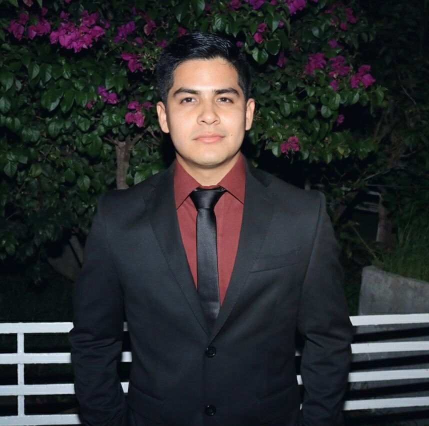

ABOUT ME

Hey, qué rollo plebes?
Mi nombre es Sergio Alberto García Martínez, soy estudiante de cuarto semestre de la carrera
de Ingeniería en Software.
Actualmente vivo en Colima, una ciudad pequeña pero muy hermosa donde se vive tranquilo.
Tiene de todo, playas, ríos, lagos, bosques, incluso hasta un volcán.
Toda mi vida la he pasado en estas tierras, pero en un futuro me gustaría mudarme
a otros lugares, ampliar mi panorama y tener nuevas experiencias.
Estoy estudiando esta carrera porque me gusta mucho la programación y lo referente a las
tecnologías. Hoy en día, la programación está cobrando mucha importancia debido a todo el surgimiento
de softwares, mismos que tienen la finalidad de hacer más fácil y mejor la vida del hombre. Por tal motivo,
me adentré en este mundo desconocido (ya que no tenía mucha experiencia programando) pero fascinante.
Me gustan mucho los deportes, principalmente el futbol y la natación. Actualmente solo practico
natación y futbol solo de vez en cuando con amigos. Me gusta escuchar música del género Indie Rock, rock y electrónica.
Me encanta viajar, conocer nuevos lugares, culturas y personas; nunca he viajado a otros países pero en un futuro no muy
lejano lo lograré.
Me considero una persona reservada y tranquila, centrada en sus objetivos y comprometido con sus metas. La familia
es muy importante para mí, ya que es en ella donde encuentras el apoyo y el amor incondicional.
Dentro de mis intereses están, como antes mencioné viajar, conocer nuevos lugares, aumetar mis conocimientos de
programación, adentrarme en la ciberseguridad, tener mi propia empresa de software y ayudar a los necesitados.